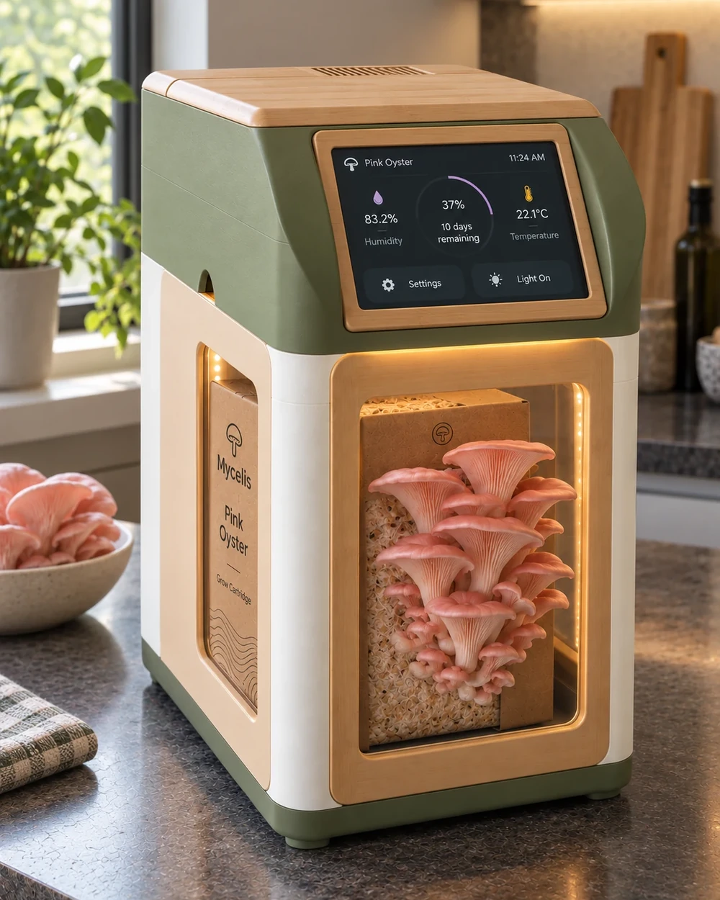
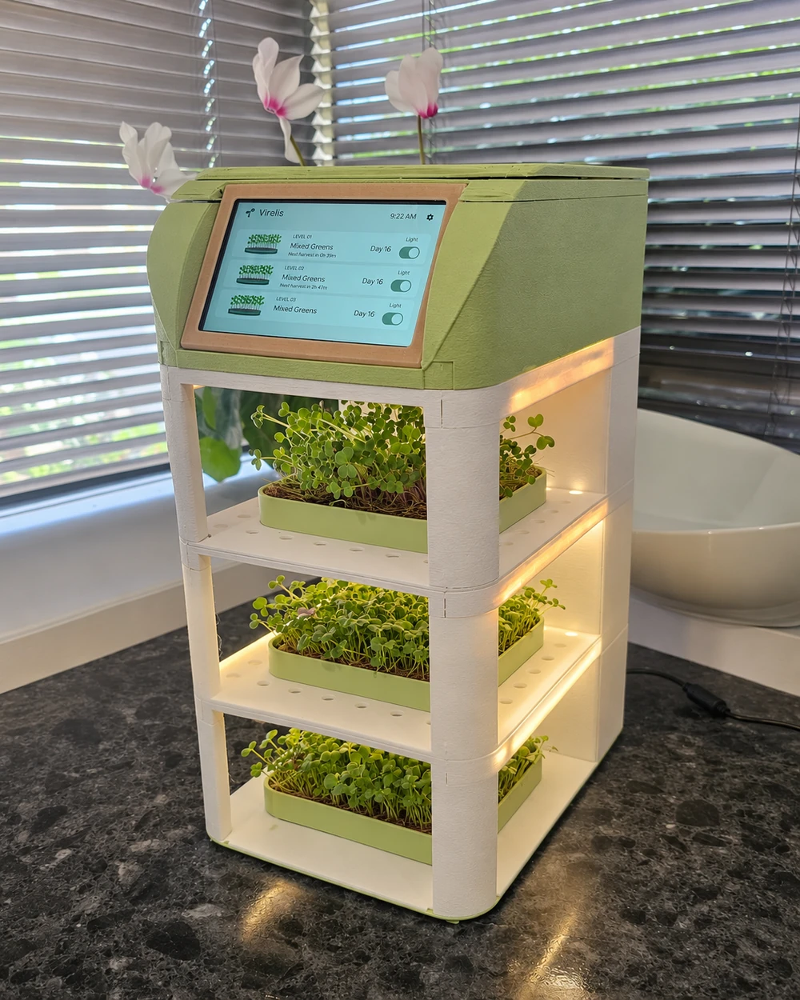

Mycelis
The prototype has grown oyster mushrooms using its automated systems.
Mycelis development status
01 Oyster mushrooms
Design render
02 Microgreens
Design renderRefills and controls
Choose our planned ready-to-grow refills or make compatible ones yourself. Neither appliance is designed to need an app, cloud service or subscription.
Development update · 17 November 2026
Both Pro prototypes are nearing completion. Classic models are still in development.
The prototype has grown oyster mushrooms using its automated systems.
Mycelis development status
The prototype has grown Mixed Greens, with some functions still controlled by hand.
Virelis development statusFrom the bench to your plate
Mycelis · Oyster mushrooms
Tear them into a pan with garlic, or stir them through a risotto.
Oyster mushrooms, on the plateVirelis · Microgreens
Snip a handful for a sandwich, or scatter them over eggs.
Microgreens, variety by varietyNo. Both machines are in development, and orders and preorders are not open. The Shop button leads to a password-protected preview, not a live checkout.
Both are designed to handle routine growing tasks. Classic uses tactile controls. Pro adds a touchscreen, light scheduling and harvest estimates. Compare Mycelis models and Virelis models.
We plan to show them at Sunday markets, but no event is confirmed. Join the waitlist for announcements or see what's planned.
The mailing list
Hear about new builds, demonstrations and when orders open.
Optional: choose Development updates for news from the bench or Purchase interest to hear when orders open.
Signing up doesn't reserve a machine. Unsubscribe anytime. Privacy information.